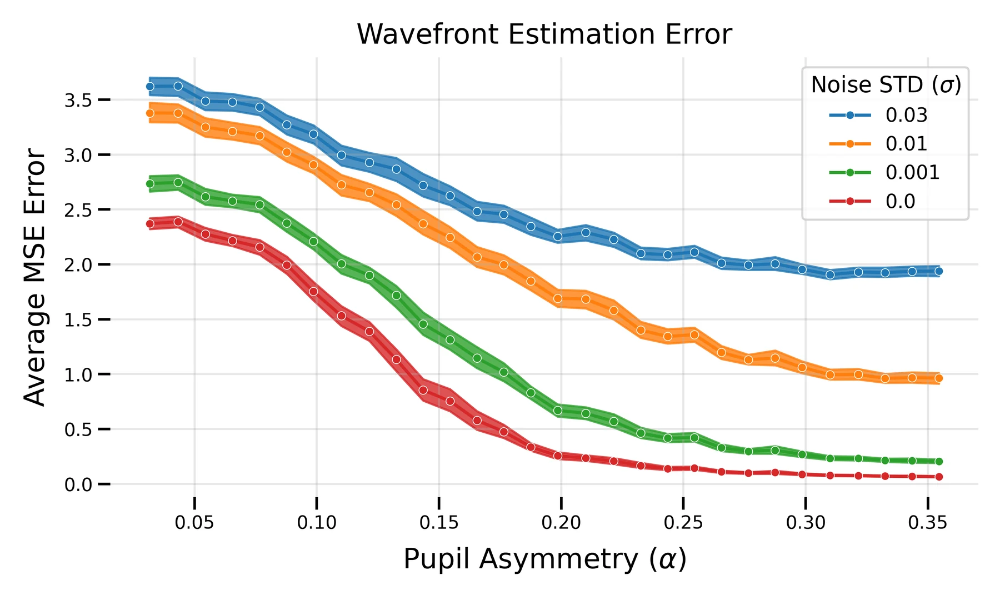
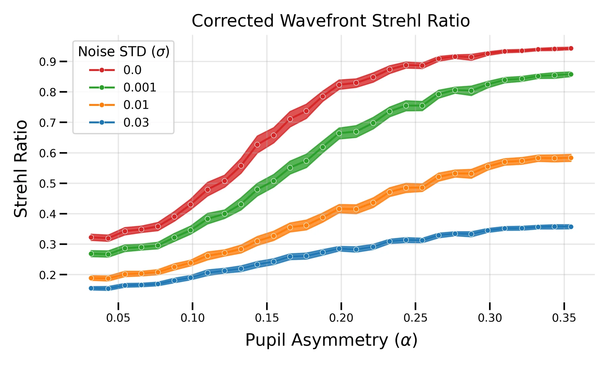
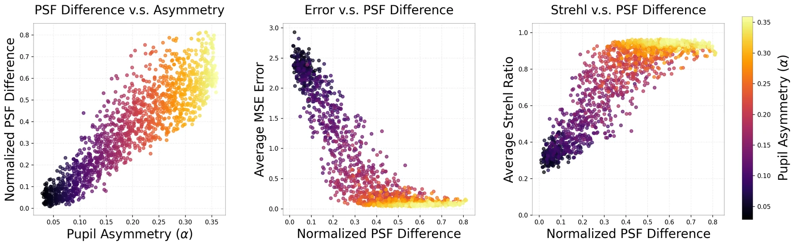

A comprehensive study of asymmetry in wavefront estimation
Elmore Family School of Electrical and Computer Engineering, Purdue University
Load the model, choose a pupil. The network will predict the wavefront in real time. You may generate a new aberration by clicking the “New aberration” button. More asymmetric pupils allow better wavefront recovery. The input to the network is a single PSF measurement.
Correction runs the trained network in your browser — 15 MB of weights plus a 14 MB runtime, fetched once.
A wavefront and its conjugate flip yield the same PSF. Asymmetry pulls them apart.
Every pupil on the slider, against its asymmetry.
Each dot is one test pupil, averaged over 1000 test wavefronts. Hover to see its shape. Click on any pupil and scroll up to see its performance.
Establishing a precise connection between imaged intensity and the incident wavefront is essential for emerging applications in adaptive optics, astronomy, and non-line-of-sight imaging. While prior work has shown that breaking symmetries in pupil design enables wavefront recovery from a single intensity measurement, there is little guidance on how to design a pupil that improves wavefront estimation. In this work, we introduce a quantitative asymmetry metric to bridge this gap and, through an extensive empirical study and supporting analysis, demonstrate that increasing asymmetry enhances wavefront recoverability. We analyze the trade-offs in pupil design and the impact on light throughput, along with performance in noise. Both large-scale simulations and optical bench experiments are carried out to support our findings. The proposed asymmetry metric can therefore be used to guide the pupil design process to improve phase recoverability in wavefront estimation applications.
Across 1500 test pupils and 1000 test wavefronts.



@article{almuallem2026pupil,
title = {Pupil Design for Computational Wavefront Estimation},
author = {Almuallem, Ali and Chimitt, Nicholas and Ma, Bole and Guo, Qi and Chan, Stanley H.},
journal = {arXiv preprint arXiv:2604.00225},
year = {2026}
}